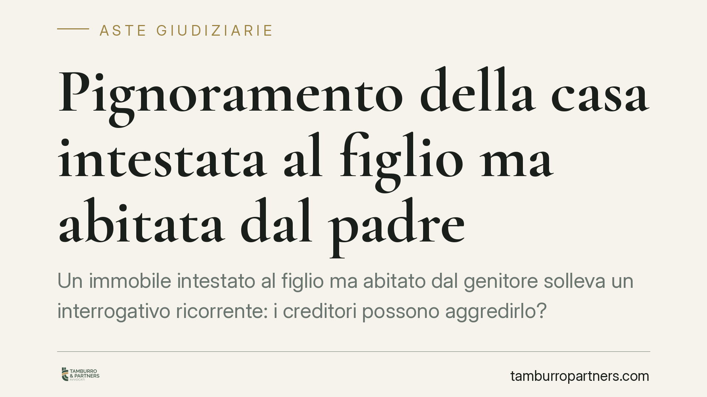

Pignoramento della casa intestata al figlio ma abitata dal padre
Un immobile intestato al figlio ma abitato dal genitore solleva un interrogativo ricorrente: i creditori possono aggredirlo? La risposta dipende da chi è il debitore e da come è avvenuta l'intestazione. La distinzione tra debiti del padre e del figlio è decisiva, così come i tempi e le modalità del trasferimento.

Il nodo giuridico
La domanda ha un presupposto tecnico spesso trascurato: il pignoramento colpisce i beni del debitore, non i beni di chi semplicemente li utilizza. Vale il principio dell'art. 2740 cod. civ., secondo cui il debitore risponde delle proprie obbligazioni con tutti i suoi beni presenti e futuri. La proprietà, non l'uso di fatto, individua il patrimonio aggredibile.
Da qui la prima distinzione. Se l'immobile è intestato al figlio e il debito è del padre che vi abita, in linea di principio il bene è estraneo alla garanzia patrimoniale del padre. Il creditore del padre non può pignorare un immobile di cui il padre non è proprietario. Al contrario, se il debito è del figlio proprietario, l'immobile è aggredibile a prescindere dal fatto che vi risieda il genitore.
Inquadramento normativo
Il punto delicato riguarda il caso in cui il padre, già indebitato, abbia intestato la casa al figlio per sottrarla ai creditori. Qui entra in gioco l'azione revocatoria ordinaria, disciplinata dagli artt. 2901 e 2902 cod. civ. Il creditore può chiedere al giudice di dichiarare inefficace, nei suoi confronti, l'atto di disposizione compiuto dal debitore in pregiudizio delle proprie ragioni.
Per gli atti a titolo gratuito – come una donazione al figlio – è sufficiente dimostrare che il debitore era consapevole del pregiudizio arrecato al creditore (la cosiddetta *scientia damni*). Per gli atti a titolo oneroso serve invece provare anche la partecipazione consapevole del terzo. Ottenuta la dichiarazione di inefficacia, il creditore può procedere a esecuzione forzata sul bene come se fosse ancora nel patrimonio del debitore, secondo l'art. 2902.
Uno strumento più incisivo è l'art. 2929 bis cod. civ. Introdotto per contrastare le intestazioni difensive, consente al creditore munito di titolo esecutivo di pignorare direttamente il bene, senza previa azione revocatoria, quando l'atto di disposizione gratuito sia stato compiuto dopo il sorgere del credito. Il termine per agire è di un anno dalla trascrizione dell'atto pregiudizievole. È una procedura accelerata che ribalta l'onere: sarà il terzo a doversi opporre.
Il diritto di abitazione
Un ulteriore profilo riguarda il diritto reale di abitazione ex art. 1022 cod. civ., che attribuisce al titolare il diritto di abitare la casa limitatamente ai bisogni suoi e della famiglia. Se il padre vanta un simile diritto formalmente costituito e trascritto, questo può gravare sull'immobile anche in caso di vendita all'asta. Diverso è il mero uso di fatto, privo di titolo, che non offre alcuna protezione opponibile ai creditori del proprietario.
La giurisprudenza – dalla Corte di Cassazione ai giudici di merito, come il Tribunale di Avellino – valuta caso per caso la reale natura dell'occupazione e la sua opponibilità nella procedura esecutiva.
Implicazioni pratiche
Per il creditore, la strategia dipende dalla cronologia: prima si individua chi è il debitore, poi si verifica quando e come è avvenuta l'intestazione. Un'intestazione anteriore al debito è di regola inattaccabile; una successiva apre la strada alla revocatoria o al pignoramento diretto.
Per il figlio proprietario, l'esistenza di un genitore convivente non blinda l'immobile se il debito è proprio del figlio. Per il padre, l'aver intestato la casa al figlio non garantisce l'immunità dai creditori se l'operazione è stata compiuta per sottrarre il bene alla garanzia.
Cosa fare in concreto
- Verificate la data di trascrizione dell'atto di intestazione e confrontatela con la nascita del credito: è il primo elemento che determina l'aggredibilità.
- Accertate chi è il debitore effettivo prima di ogni valutazione: la proprietà, non l'uso, individua il bene pignorabile.
- Controllate se esiste un diritto di abitazione formalmente costituito e trascritto, distinguendolo dalla semplice occupazione.
- Se siete creditori, valutate i tempi: l'azione ex art. 2929 bis va esercitata entro un anno dalla trascrizione dell'atto gratuito.
- Consigliamo di richiedere una visura ipocatastale aggiornata e un'analisi documentale preliminare prima di avviare qualsiasi iniziativa esecutiva.
Disclaimer
Contributo informativo a cura di Tamburro & Partners - Avv. Giuseppe Tamburro. Non costituisce parere legale.
Comprare bene all’asta si può.
Se vuoi acquistare un immobile all’asta in sicurezza o difendere un esecutato, scrivi allo studio. Ti rispondiamo entro un giorno lavorativo.